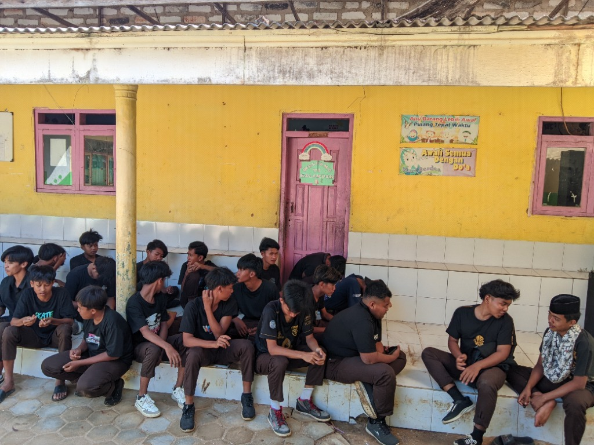
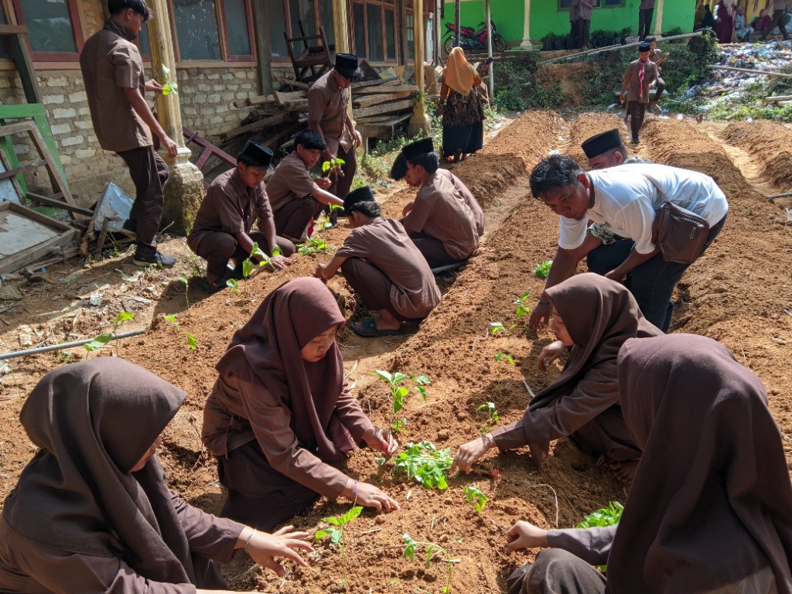
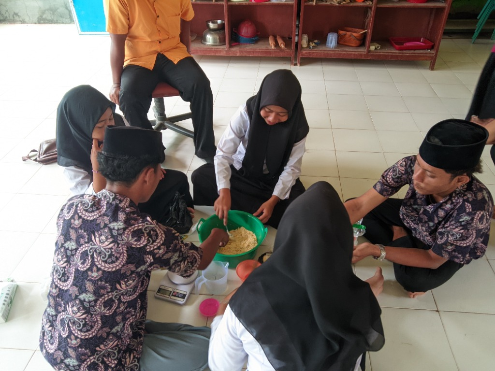
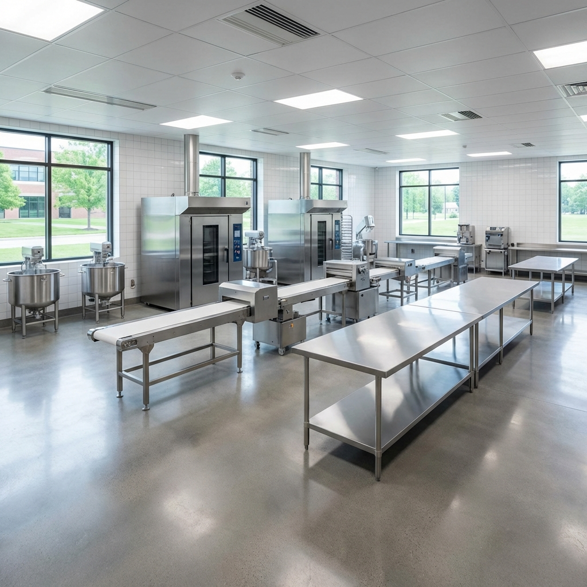
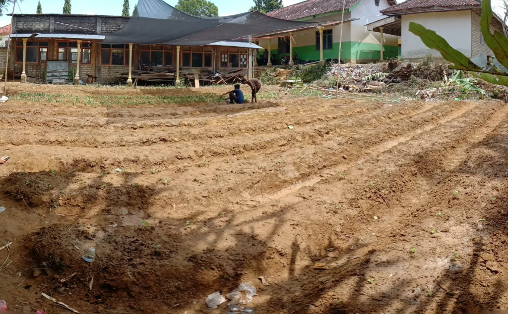

Profil Kompetensi Keahlian
Agribisnis Pengolahan Hasil Pertanian (APHP) adalah salah satu kompetensi keahlian di SMK Dzannuroin yang mempelajari penanganan pasca panen, pengolahan, pengemasan, hingga pemasaran produk pertanian. Jurusan ini mencetak tenaga terampil yang mampu mengolah bahan mentah menjadi produk bernilai jual tinggi.
Prospek Kerja: Quality Control di industri pangan, Wirausaha kuliner, Staff Laboratorium Pangan, Barista, Baker, dan Penyuluh Pertanian.
Apa Yang Dipelajari?
- Dasar Penanganan Bahan
- Pengolahan hasil pertanian (Buah & Sayur)
- Produksi Roti & Kue (Bakery)
Galeri Kegiatan

Kebersamaan Siswa
Membangun karakter dan kekeluargaan di lingkungan sekolah.

Praktek Budidaya
Siswa belajar teknik pertanian secara langsung di lahan praktik.

Produksi Pangan
Mengolah hasil pertanian menjadi produk kuliner bernilai jual.
Fasilitas Laboratorium

Laboratorium Pengolahan
Dilengkapi dengan peralatan stainless steel standar food grade, oven industri, mixer planetary, dan alat vacuum sealer untuk menjamin kualitas produk siswa.

lahan pertanian
Tempat siswa belajar menganalisis kualitas bahan pangan secara kimia dan mikrobiologi, memastikan produk aman dikonsumsi.